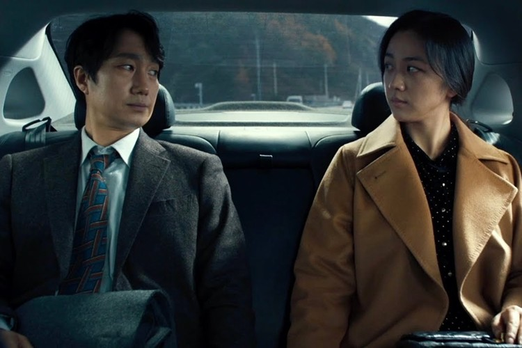

영화 소개
친절하고 예의 바른 형사 ‘해준’, 어느 날 산에서 벌어진 변사
사건을 맡게 되었다.
사망자의 아내 ‘서래’를 만난 후 의심과 묘한 관심의 감정을 동시에
느끼게 된다.
의심과 관심 사이, 둘 사이에서 벌어지는 우회 관계를 그린 수사
멜로 영화
영화 정보
장르
로맨스, 멜로/드라마감독
박찬욱극본
정서경, 박찬욱출연진
탕웨이, 박해일-
 마침내.
마침내.
-  나는요... 완전히 붕괴됐어요.
-
 다른 남자하고 헤어질 결심을 하려고... 했습니다.
다른 남자하고 헤어질 결심을 하려고... 했습니다.
-
날 사랑한다고 말하는 순간 당신의 사랑이 끝났고,
당신의 사랑이 끝나는 순간 내 사랑이 시작됐죠.
줄거리
산 정상에서 추락한 한 남자의 변사 사건.
담당 형사 '해준'(박해일)은
사망자의 아내 '서래'(탕웨이)와 마주하게 된다.
"산에 가서 안 오면 걱정했어요, 마침내 죽을까 봐."
남편의 죽음 앞에서 특별한 동요를 보이지 않는 '서래'.
경찰은 보통의 유가족과는 다른 '서래'를 용의선상에 올린다.
'해준'은 사건 당일의 알리바이 탐문과 신문,
잠복수사를 통해 '서래'를 알아가면서
그녀에 대한 관심이 점점 커져가는 것을 느낀다.
한편, 좀처럼 속을 짐작하기 어려운 '서래'는
상대가 자신을 의심한다는 것을 알면서도
조금의 망설임도 없이 '해준'을 대하는데….
진심을 숨기는 용의자
용의자에게 의심과 관심을 동시에 느끼는 형사
그들의 헤어질 결심


journal
-

cocktails
New Year’s Eve is all about celebrating in style.With that in mind, we asked Daniel Hooper, Co-Founder of YesMore drinks-marketing agency (and former superyacht crew member) to share with us his recommendations.
-

eco coffee
Some small brands that are worth the switch to enjoy a cup of coffee that little bit more. For many of us, the need for a quick fix coffee in our busy day-to-day lives sees the use of coffee capsules at home, onboard or in the workplace as a much-used product. Convenient as they are, only a small percentage can actually be recycled, meaning a vast majority will end up in our oceans and landfills for up to 500 yrs.
-

arboremtum
London is seeing a new genre of private independent member’s clubs emerging, offering luxurious leisure and dining facilities, alongside unique working environment and, most importantly an emphasis on environmental and social change.
-

protected species
Iconic British design with contemporary rainwear technology At Crew à la Mode, we are passionate about sustainability, timeless style and performance-led design and we are always looking for brands who share our ethos and goals, in order to either work with them or recommend them to our clients.